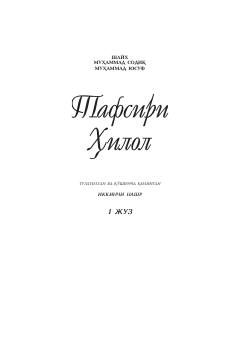

THQuron oyatlarining o'zbek tilidagi 'Hilol' tafsiri — 1-qism.
Bu kitob Quron oyatlarining tafsiri (izohi) bo'lib, 'Hilol' nomli tafsir seriyasining birinchi qismidir. Unda oyatlarning ma'nolari va diniy tushunchalar o'zbek tilida bayon etilgan. Kitob musulmon o'quvchilar uchun Quronni tushunishga yordam beruvchi muhim manba hisoblanadi.